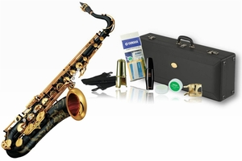
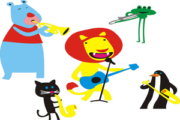
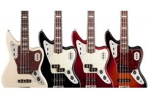
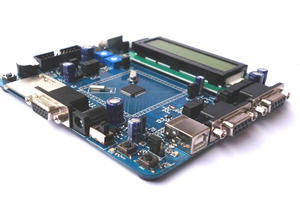
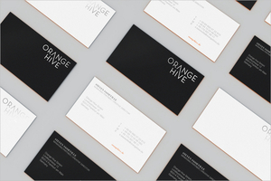
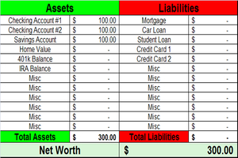

Hello! My name is John deGuise and I am a senior at Central Michigan University. I am currently pursuing a double major in computer science and entrepreneurship with a minor in leadership studies. Here at Central Michigan University, In the past, I have:
To keep inspiring myself and those around me to bring the highest quality possible to their work. My future job titles are CEO/Founder.
I wish to use my experiences as momentum to work on greater projects, in order to build on the skills required for enterprise management - one of my goals and an intention for after graduation.
Click on the images in the table below for some background articles and related links to my interests.
| Musical Instruments | Technical Interests | Business Interests | Miscellaneous |
|---|---|---|---|
|

Saxophone and Improvisation |
Penetration Testing |
 Artists and Repertoire |
Puppies |
|
 Bass Guitar |
 Embedded Systems |
 Graphics Branding |
Tacos |
|
Piano |
Business AI |
 Financial Projection |
Beer |
|
Baritone/Euphonium |
Creative Graphic Design |
Leadership and Talent Growth |
Entrepreneurship |
My background in programming breaks down into 3 groups: academic/independent learning, IT-related programming, and web application software development.
I signed my major in computer science in Spring of 2014. Before I signed the major, I completed a few basic programming language tutorials on various sites (KhanAcademy, Codecademy, etc...); much of what I learned by using free resources set me up for success in my IT-related interviews.
In Fall of 2014, I was hired by Technology Operations - an on-campus 2nd level support team for Mac-users (residence halls, administrative staff, other various terminals). Through TechOps, I learned about scripting in Python and Bash, how to use configuration management tools such as Puppet, the basics of Unix systems and the benefits they can bring, and developed a comprehensive understanding of troubleshooting OS X-related issues.
Following my job at TechOps, I was hired as an entry level software developer at a company in the startup phase called ChargeOver, a recurring billing web application company. My role in engineering is to build functionality that our team decides is going to be the most helpful to our end users, using PHP, HTML/CSS/JS, and MySQL to accomplish programming goals.
I spend a lot of my spare time working on projects involving other people, whether they be musical, technically-related, or otherwise.